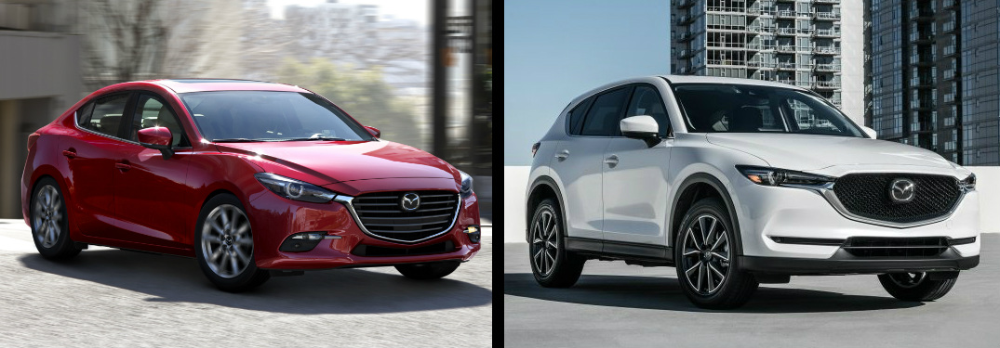

Mazda began as the Toyo Cork Kogyo Co., Ltd, as a cork-making factory founded in Hiroshima, Japan, 30 January 1920. Toyo Cork Kogyo renamed itself to Toyo Kogyo Co., Ltd. in 1927. In the late 1920s the company had to be saved from bankruptcy by Hiroshima Saving Bank and other business leaders in Hiroshima.
In 1931 Toyo Kogyo moved from manufacturing machine tools to vehicles with the introduction of the Mazda-Go auto rickshaw. Toyo Kogyo produced weapons for the Japanese military throughout the Second World War, most notably the series 30 through 35 Type 99 rifle. The company formally adopted the Mazda name in 1984, though every automobile sold from the beginning bore that name. The Mazda R360 was introduced in 1960, followed by the Mazda Carol in 1962.